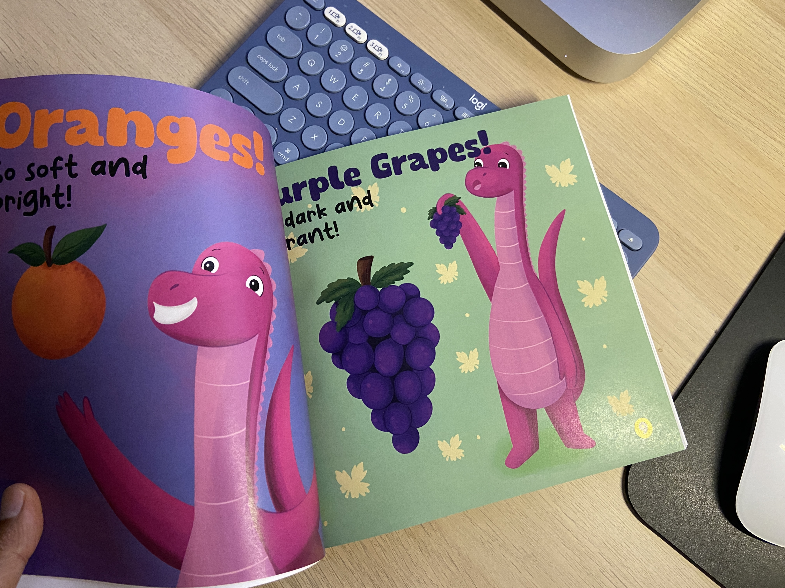

There is a story behind everything!
So, how did Chester the dino come to life?
by Manoj Kumar (author)
It all began in 2023 when my wife surprised me with a hand-drawn birthday card. It was adorable, simple, and radiated with cuteness. As someone who has always had a fondness for illustrations, I was deeply touched by her gesture. What made it even more special was her choice of color – purple, her favorite hue, which lent a unique charm to the artwork. I cherished that card, keeping it safe with me. Then, in January 2024, inspiration struck. I felt compelled to recreate the drawing on a t-shirt, blending my passion for design with the sentimental value of the artwork.
When I revealed my creation to my wife, her joy was infectious. As I gazed at my digital rendition of the drawing, a spark ignited within me. I realized that this character could captivate the hearts of children if brought to life in a book. With my newfound interest in graphic design and ongoing experiments in book design, I saw an opportunity to merge my love for illustrations and storytelling into a single project. Without hesitation, I dove into bringing this idea to fruition. Within a matter of days, I had transformed the concept into a tangible reality.
The moral of the story? Inspiration can strike unexpectedly, so keep your heart open to the possibility of miracles.
May the illustration begin!

On 18 January 2024, at 9:56 PM, I found the illustrator who would go on to create the book I envisioned.
"Hello, My name is Anisa, an illustrator from Indonesia. I saw your brief and I want to create children's book with you. I would love to be able to collaborate with you in the future. Please feel free to view my portofolio and let me know if anythig catches your eyes! Have an enjoyable day! Best, Anisa"
I had already prepared the story outline, and all the content for the book (the fruits). Anisa, took my manuscript and the digital drawing, and she began to prepare the character, the poses, and the personality. Once this was decided, she set the storyboard in motion, and every illustration she sent me for approval, I approved it right away - it was that good!
May the book design begin!
Once I received all the illustration files from the illustrator, the next step was to dive into book design. On Thursday, March 7th, 2024, armed with Affinity Publisher, a graphic design software, I embarked on this new endeavor. While I'm not a graphic designer by trade, education, or hobby, I was determined to master the tool for the purpose of bringing my books to life. I delved into countless online resources, including videos, blogs, and message boards, to hone my skills and complete the design. By March 10th, the design was finalized, and I eagerly submitted it to Amazon for approval. The thrill peaked on March 13th, 2024, when a hardcopy proof arrived in the mail. Joy knew no bounds as I held the tangible result of an idea transformed into a finished product.
That's the story in a nutshell!
I've relished every moment of the past few months as an indie author, and I'm fully committed to pursuing this path with dedication. Exciting plans are already underway for a series of new books featuring Chester the purple dino, and I'm eager to share them with you in the months and years ahead! You can checkout my upcoming books across different genres here: Purple Dino Books